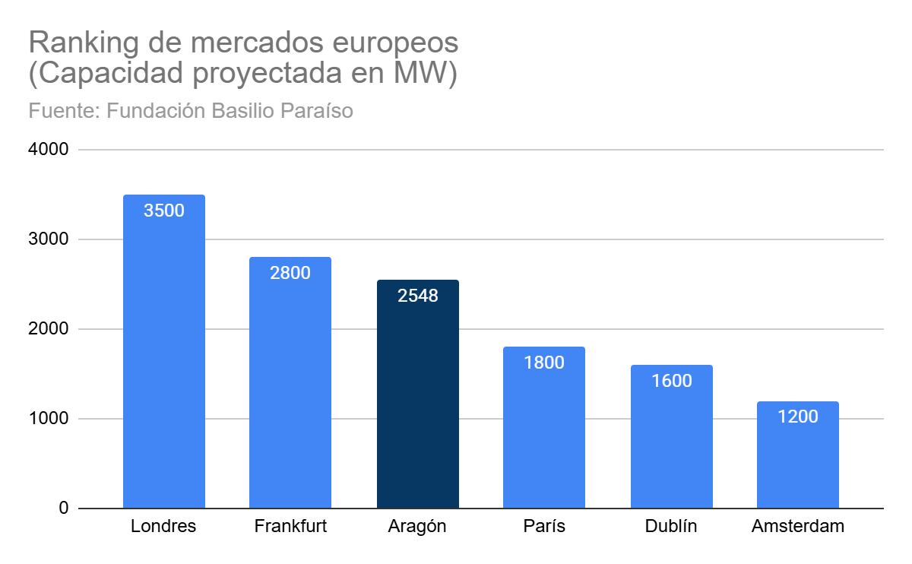
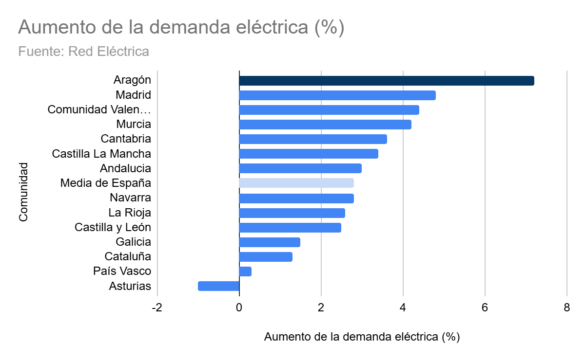
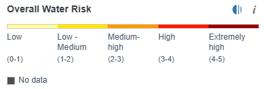
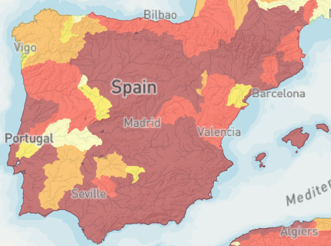

Un edificio de colores apagados. Una considerable seguridad rodeándolo. Un ligero zumbido en sus alrededores. La mayoría no sabría de qué se trata solo con verlo, pero ahí reside uno de los mayores orgullos del Gobierno de Aragón. Desde la instalación de los tres primeros centros de datos en la comunidad bajo el gobierno del socialista Javier Lambán, Aragón se ha convertido en uno de los destinos más codiciados para la construcción de centros de datos y con la llegada del ejecutivo de Jorge Azcón esta tendencia no ha hecho más que seguir creciendo. Si nos fijamos en la capacidad proyectada, Aragón ya superaría a destinos históricos como París o Dublín. Con tres centros ya en funcionamiento y decenas planeados para su construcción, es de esperar que este número siga creciendo.

Un centro de datos es una instalación física que contiene equipamiento informático para permitir el funcionamiento de aplicaciones o equipos en la nube de forma remota. El ejecutivo aragonés ha promocionado la expansión de estos centros mientras el presidente aspira a convertir la región en “la Virginia europea”, en referencia a la región estadounidense que más instalaciones de esta clase tiene en el mundo. Para ello, muchos de estos proyectos han sido introducidos en el Plan de Interés General de Aragón (PIGA) con el fin de dar facilidades fiscales y burocráticas y acelerar estos proyectos que han traído al menos 48.000 millones de euros de inversión. Sin embargo, estos planes del gobierno están empezando a tener obstáculos.
El 30 de noviembre del año pasado, Villanueva de Gállego llevó a los tribunales el PIGA que avala la construcción de un centro de datos en la localidad. Junto a otros municipios también afectados, protesta por la exención a estos centros del Impuesto sobre Construcciones, Instalaciones y Obras que implicaría unos ingresos muy considerables en estos pequeños municipios. En declaraciones a El Español, el alcalde de Villamayor de Gállego aseguró que se debe “compensar esos niveles económicos que deja de percibir el ayuntamiento”. “Al final, no es que los hayamos llamado nosotros, es que han venido ellos”, añadió.
A pesar de ello, el frente más sensible para la DGA probablemente sea el ecologista. Ni dos meses después de ese primer reto judicial, la asociación Ecologistas en Acción anunció que interpondría un contencioso administrativo contra la expansión de AWS a través del PIGA. Este texto asegura que “si los centros de datos vienen a Aragón no es por la idoneidad sociomedioambiental, sino por los incentivos fiscales, el regalo de los terrenos y por una electricidad a bajo costo”. Preguntados por los objetivos, Luis García Valverde, miembro de la asociación, aseguró que su plan es detener la construcción del centro: “El Plan de Interés General está hecho para la expansión. Son lo mismo el plan y el proyecto de Amazon”.
Lo cierto es que diversas asociaciones ecologistas llevan alertando sobre los potenciales peligros de estos centros desde hace tiempo. “A mí lo que más me preocupa es el consumo energético”, asevera García Valverde. El informe del sistema eléctrico español presentado por Red Eléctrica muestra que Aragón generó en 2025 22.365 gigavatios hora y consumió 10.659. Esto es una subida del 7 %, más del doble de la media española. De este consumo, se calcula que un 14% pertenece a los centros de datos en funcionamiento, un valor que se espera que crezca. Actualmente, estos centros tienen una potencia instalada de 250 MW, pero hay planeados 2.500 MW frente a los 342 MW que usa la capital aragonesa.

Según el informe El Punto de Inflexión Energético para Aragón de la Fundación Basilio Paraíso, el problema no es de producción sino de infraestructura y los centros de datos serán un catalizador para su mejora. El Gobierno de Aragón no ha contestado a la invitación para participar en este reportaje, pero en el Foro Caja Rural de Aragón el presidente Azcón compartió esta tesis y exigió al gobierno central un plan quincenal que “sea justo con la comunidad autónoma y que incremente la inversión en la red eléctrica”.
Por el contrario, Ecologista en Acción avisa del consumo preferente que estos centros tienen con respecto al resto de la población: ”Este tipo de proyecto lo que hace es que la energía de Aragón se use exclusivamente para estos centros de datos cuando la red eléctrica ya está de por sí muy saturada. La aprobación de proyectos que consumen tantísima energía va a hacer que haya mucha industria que necesite esa energía y no pueda instalarse en Aragón”.
Los ecologistas también alertan de seguir el modelo de Virginia que califican de “barco hundiéndose”. El estudio Clik Clean Virginia de Greenpeace mostró que tras la instalación de centros de datos la demanda de electricidad continuó creciendo a un ritmo “dramático” y que, a pesar de sus promesas, la mayor parte de esa energía era no renovable. “Las renovables tienen mucha variabilidad y los centros de datos necesitan una potencia constante hasta por la noche, no pudiendo beneficiarse de ellas”, explica García Valverde. Además, señala que el gran aumento de la demanda causa subidas en la factura de la luz.
Otra de las mayores preocupaciones de los ecologistas es el consumo de agua del que hacen uso los centros de datos para refrigerar los servidores. Algunas empresas, como Amazon, aseguran que devolverán a la red toda el agua que utilicen, 755.000 m³ en el caso del gigante americano. Luis García Valverde dice que esta promesa es muy costosa, por lo que “puede ser posible, pero como en el futuro les deje de ser rentable no lo harán”. Desde el colectivo Tu Nube Seca mi Río llevaron a cabo el reporte El Precio de las Nubes donde destacaron que tras la publicación del último PIGA Amazon había aumentado un 48% sus previsiones de consumo de agua. En un país con importante riesgo de sequía, explica García Valverde, “estos grandes consumidores deberían consumir menos para dejar espacio a agricultores y consumo doméstico”.
Aragón aumentó un 7% su consumo de energia, más del doble de la media española
Este consumo eléctrico y de agua es mayor en los centros de datos dedicados a los nuevos usos de la inteligencia artificial. El estudio Making AI Less "Thirsty": Uncovering and Addressing the Secret Water Footprint of AI Models (2023) calculó que estos centros de datos para la inteligencia artificial consumen 500 ml de agua por cada 10-50 respuestas en una sesión típica con ChatGPT3.11, un gasto de agua que acaba siendo muy superior al de otra clase de centros de datos. Actualmente, la última versión de ChatGPT es la 5.2 y se estima que cada nueva versión utiliza más agua que la anterior.


Los colectivos ecologistas también confluyen en criticar la falta de información de estos centros. “No sabemos si tienen consumo preferencial en el agua. Sabemos la potencia que tienen instalada, pero no su consumo eléctrico -dice el miembro de Ecologistas en Acción-. Es una industria que se caracteriza por su opacidad”. La principal fuente de datos sobre estos centros son las propias empresas, por lo que desde diferentes colectivos se toman esos valores con escepticismo. Un informe interno de Amazon filtrado en 2025 a SourceMaterial reveló que en 2022 la cantidad de agua que admitieron consumir fue deliberadamente menor de la real para cumplir con su plan de “devolver más agua de la que consuman para 2030”. Preguntado por The Guardian, Amazon aseguró que se trataba de un informe obsoleto y habían cambiado su estrategia de consumo de agua, pero desde Ecologistas en Acción no se fían de la palabra de la empresa y temen que el acceso que tienen a los acuíferos les permita ocultar su consumo real si no hay una correcta supervisión. De igual manera, también dudan de los datos de creación de empleo que prometen: “Hay veces que los ecologistas tenemos que debatir entre medio ambiente o economía; en este caso va a ser perjudicial para los dos”.
Desde el ecologismo se ha vinculado este aumento en los centros de datos y el agravamiento de sus consecuencias a una burbuja de la inteligencia artificial: “Estos centros de datos son simplemente un pelotazo urbanístico”. “La empresa de ChatGPT, OpenAI, lleva años encadenando pérdidas y en ningún momento de su existencia ha obtenido beneficio económico” -explica Luis García Valverde sobre lo que desde su organización califican de “burbuja de megacentros de datos fuera de control” a la espera de explotar-. “¿Hasta qué punto estos inversores privados, y públicos en algunos casos, están dispuestos a seguir financiando algo que no aporta beneficio en ningún momento?”.
Mientras estos centros se siguen reproduciendo por Aragón, la resistencia aumenta. Ecologistas en Acción lanzó un crowdfunding para pagar los costes del litigio contra el PIGA mientras el enfrentamiento entre el ayuntamiento de Villanueva de Gállego y el Gobierno de Aragón se está llevando en completo secreto. El futuro de estos centros se desconoce, pero desde Ecologistas en Acción avisan: “En Aragón ya se están empezando a ver las consecuencias”.